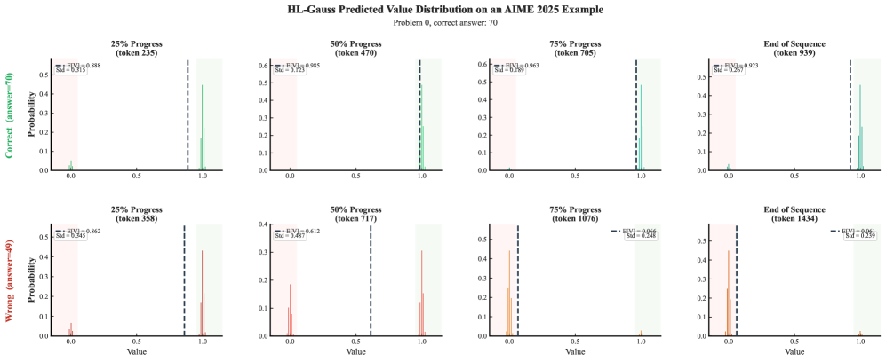

Start Classifying: HL-Gauss Categorical Critics for PPO in RLVR
TL;DR
- "Start Classifying: Categorical Critics for LLM Reinforcement Learning" (arXiv 2608.02181; Zhijian Zhou, Long Li, Xuan Zhang, Zongkai Liu, Yulei Qin, Ke Li, Xing Sun, Xiaoyu Tan, Chao Qu, Yuan Qi) swaps PPO's scalar MSE critic head for a 101-bin categorical head trained by cross-entropy against Gaussian-smoothed (HL-Gauss) targets, then decodes the expectation back to a scalar for standard GAE — the actor update is completely unchanged.
- The drop-in swap beats strong PPO and DAPO baselines everywhere tested: avg@256 on competition math 15.88 → 18.74 (+2.86, +5.20 on AIME25) and pass@256 38.48 → 48.06 (+9.58) on Qwen2.5-Math-7B; +2.22 average on Search-R1 agentic QA — at essentially zero extra wall-clock cost.
- The why is calibration, not distributional RL: under binary rewards, a miscalibrated scalar critic penalizes failures 2.6–2.8× harder than it rewards successes; HL-Gauss brings that advantage asymmetry to ~1.0× and cuts Brier/ECE/MCE by 19/18/28%, with careful controls (one-hot, two-hot, Bernoulli two-bin) showing neither a bigger head nor binary classification alone explains the gains.
Why this matters
The RLVR mainstream abandoned critics: GRPO and its descendants replace the value network with group-normalized Monte Carlo advantages precisely because PPO critics trained by MSE on sparse binary rewards are noisy and hard to calibrate. This paper attacks the diagnosis instead of the architecture. If the critic's failure mode is an optimization artifact of scalar regression — not something inherent to learned value functions — then fixing the training objective revives the actor-critic pipeline, with its per-token value estimates and credit-assignment machinery, for reasoning RL.
The evidence that this was the right target is the advantage-asymmetry measurement, which is the most useful diagnostic in the paper independent of the method: with \(\gamma=\lambda=1\) and terminal binary reward, GAE reduces to \(\hat A_t = r - V_\phi(s_t)\), so a critic that systematically overestimates success probability hands out negative advantages of magnitude \(V_\phi\) and positive ones of magnitude \(1-V_\phi\). Measured on AIME24 rollouts, the MSE critic punishes failures 2.63× harder than it rewards successes — a persistent, structural pessimism bias in the policy update that batch normalization cannot remove (it is affine; the asymmetry is relative). HL-Gauss brings the ratio to 1.02×. The disproportionate pass@k gains follow directly: hard problems live at small success probability \(p\), where \(\mathrm{pass}@k=1-(1-p)^k\) is most sensitive and where under-rewarded rare successes hurt most.
The core idea
Keep PPO. Change only what the critic regresses. Instead of a scalar head \(V_\phi(s)=\mathbf{w}^\top\mathbf{h}+b\) trained by MSE, use an \(m\)-way softmax over a fixed value support \(\{z_i\}_{i=1}^m\) spanning \([v_{\min},v_{\max}]\), and read the scalar back out as the expectation:
where \(p_\phi(\cdot\mid s)=\mathrm{softmax}(W\mathbf{h}+\mathbf{b})\) is the predicted categorical distribution over bin centers \(z_i\). The GAE target \(y_t=\hat V_\phi(s_t)+\hat A_t\) is projected onto the bins by the HL-Gauss construction — each bin receives the mass a Gaussian centered at \(y_t\) puts inside it:
where \(\Phi\) is the standard normal CDF, \(\Delta=(v_{\max}-v_{\min})/m\) the bin width, and \(\sigma\) the smoothing bandwidth. The critic minimizes cross-entropy over valid response tokens \(\mathcal{M}\):
Nothing distributional reaches the actor: the decoded scalar feeds ordinary GAE and the ordinary clipped surrogate. This is a training surrogate for the same scalar value function — which is exactly why it is a drop-in replacement rather than a new algorithm.
Two mechanisms are offered, both stated with unusual restraint. First, gradient geometry: MSE confines the per-sample gradient at the last hidden state to \(\mathrm{span}(\mathbf{w})\) (one direction), while cross-entropy delivers \(W^\top(\mathbf{p}-\mathbf{q})\), combining up to \(m\) rows — a broader per-sample channel. Second, target smoothing: one-hot targets push predictions toward simplex corners where the Fisher information \(\mathrm{diag}(\mathbf{p})-\mathbf{p}\mathbf{p}^\top\) degenerates; Gaussian-smoothed targets keep solutions interior and better-conditioned. The controls give both stories teeth: one-hot (same head size, sharp targets) is weaker, so dimensionality alone is insufficient; Bernoulli two-bin (binary classification, no metric support) improves pass@256 but not avg@256, so binary classification alone is insufficient too.

Figure 1 from the paper: the categorical critic's bin distribution along a correct rollout (top) and an incorrect one (bottom) — diffuse bimodal mass early, then progressive concentration toward the true outcome as evidence accumulates.How it works
# HL-Gauss PPO — one training iteration (actor side unchanged)
support: m=101 bins on [v_min, v_max] = [-0.1, 1.1], Δ ≈ 0.0119
1: collect rollouts with π_θ; terminal binary reward r ∈ {0,1}
2: for each token position t:
3: V̂(s_t) ← Σ_i p_φ(z_i|s_t)·z_i # expectation decode
4: Â_t ← GAE(r, V̂; γ, λ) # standard
5: y_t ← V̂(s_t) + Â_t # bootstrapped scalar target
6: q(y_t) ← per-bin Gaussian CDF mass # HL-Gauss projection
7: critic: minimize cross-entropy( q(y_t), p_φ(·|s_t) ) over tokens
8: actor: maximize PPO clipped surrogate with Â_t (Clip-Higher,
token-level loss, critic pretraining, group sampling)
Setup details worth noting. The baseline is deliberately strong — PPO plus the now-standard DAPO/VAPO tricks (Clip-Higher, token-level loss, critic pretraining, group sampling), applied uniformly to every critic variant, with \(\lambda=1\) in the actor. Backbones: Qwen2.5-Math-7B for math (trained on DAPO-Math-17K), Qwen2.5-7B-Instruct for Search-R1 and tool-augmented math, Qwen3-4B-Base as a generalization check; all in veRL. The support uses a small margin beyond the binary reward range (\([-0.1, 1.1]\)) and 101 bins; the head grows from \(\mathbb{R}^{d}\to\mathbb{R}^{1}\) to \(\mathbb{R}^{d}\to\mathbb{R}^{101}\), which is ~0.006% of a 7B model — per-step wall-clock is measured as near-identical to PPO across 400 steps.
Results
- Competition math (Qwen2.5-Math-7B, avg@256 over AIME24/25, HMMT, BeyondAIME, Brumo): 15.88 (PPO) → 18.74 HL-Gauss (+2.86), largest single-benchmark gain +5.20 on AIME25; also beats DAPO under the same recipe. pass@256: 38.48 → 48.06 (+9.58).
- Qwen3-4B-Base: avg@256 15.33 → 17.18; pass@256 53.40 → 57.13 — the effect is not confined to one backbone.
- Search-R1 agentic QA (Qwen2.5-7B-Instruct, 7 datasets, mean@1): 44.91 (PPO) → 47.13 (+2.22 average, +5.60 on Bamboogle), with DAPO at 43.60.
- Controls: one-hot and two-hot categorical critics underperform HL-Gauss; Bernoulli two-bin lifts pass@256 (45.67) but not avg@256 (15.50 vs 15.88 for MSE) — smoothed, metric-aware targets are the active ingredient, not head width or binary classification.
- Calibration (AIME24 prefixes, oracle \(V^*\) from 256 MC continuations): Brier 0.2031 → 0.1637 (−19.4%), ECE −18.4%, MCE −27.9%; the largest gap sits in \(0<V^*<0.5\) (0.296 vs 0.121) — exactly the likely-failure region where overestimation inflates negative advantages. Advantage symmetry: MSE ratio 2.63×/2.78× (AIME24/25) vs HL-Gauss 1.02×/0.99×, and the MSE skew worsens over training while HL-Gauss holds near 1.
How it connects
This is the value-side complement to the tracker's RL-plumbing thread. Where "ISO: An RLVR-Native Optimization Stack" redesigns the policy-side optimizer for RLVR's geometry, this paper redesigns the critic's loss for RLVR's sparse binary targets — both are "the standard deep-RL recipe was tuned for the wrong regime" arguments. The calibrated per-token value estimates matter directly for credit-assignment work like "TRACE: Turn-Level Rewards for Long-Horizon Agents": turn- and token-level advantage decomposition is only as good as the value function it subtracts, and a 2.6× sign-asymmetric baseline poisons any such scheme. For the agentic-training pipelines this tracker follows ("Molt: NVIDIA's PyTorch-Native Agentic RL Framework", the PPO stage of "RST: Recursive Synthesis for Long-Horizon Terminal Tasks"), the Search-R1 result is the relevant one — a critic-based method beating both PPO and DAPO on multi-turn tool use suggests the GRPO-by-default choice deserves re-examination when per-token values are useful. The regression-as-classification lineage (Imani & White's HL loss, MuZero's two-hot heads, Farebrother et al.'s scaling study) is imported wholesale; the contribution is the controlled study inside LLM RLVR.
Critical take
The honest framing in the paper deserves preserving: MSE is population-consistent for the conditional expected return — the claim is about optimization and calibration under a shifting on-policy distribution, not statistical validity, and the authors explicitly decline to claim advantage symmetry is the sole causal mediator. What is missing is the comparison practitioners actually face: HL-Gauss PPO vs GRPO under matched compute. The paper compares against PPO and DAPO; GRPO appears only in quoted Search-R1 reference numbers (39.60, below their 47.13, but not a controlled run). A critic costs a second model's memory and compute — the case for paying that depends on beating the critic-free recipe, not just fixing PPO. Scale is also untested beyond 4–7B Qwen models, and value-support hyperparameters (\(v_{\min},v_{\max},\sigma\)) are admitted to be task-dependent — fine for binary RLVR, but reward shaping or non-binary returns need re-tuning. Finally, pass@256 (+9.58) improving three times more than avg@256 (+2.86) cuts both ways: the policy explores better and rare successes survive, but average-case gains are modest — worth remembering when the headline is read as "PPO fixed."
If you remember three things
- Under sparse binary rewards, a miscalibrated MSE critic makes PPO structurally pessimistic — failures are penalized 2.6–2.8× harder than successes are rewarded — and this asymmetry, not the actor update, is a primary failure mode of actor-critic RLVR.
- The fix is a training-objective swap, not a new algorithm: 101-bin categorical head, cross-entropy against Gaussian-smoothed HL-Gauss targets, expectation-decoded back to the same scalar GAE consumes — near-zero overhead, advantage ratio back to ~1.0, +2.86 avg@256 / +9.58 pass@256 over strong PPO.
- The controls are the intellectually interesting part: smoothed, metric-aware targets are the active ingredient — one-hot (same head size) and Bernoulli two-bin (binary classification) both fail to reproduce the gains, so it's neither dimensionality nor classification per se.